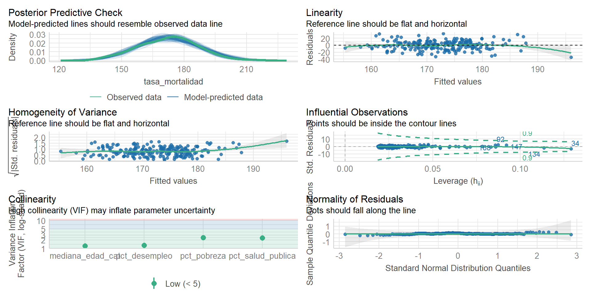

Semana | Tema |
|---|---|
30 oct. al 03 nov. 2024 | - Introducción a los Paquetes y Lenguajes Estadístico. Diferencias entre interfaces gráficas (GUI) y de línea de comandos (CLI). Comparativa entre software privativo y gratuito/open source. |
- R y R-Commander. Navegación del menú. Lectura e importación de archivos de datos. Estadística descriptiva. Agrupamiento de variables. Manejo de factores. Guardado de scripts y resultados. Paquetes y plugins. | |
06 al 09 nov. 2024 | - Relación entre variables numéricas. Covarianza y representación gráfica. Limitaciones. Correlación de Pearson: interpretación del signo y la magnitud.Visualización con correlogramas. Métodos no paramétricos: correlación de Spearman y de Kendall. |
- Introducción al Modelado Estadístico. Modelo lineal general: concepto y supuestos. Bondad de ajuste y análisis de residuos. Regresión lineal simple y análisis de la varianza (ANOVA). Interpretación de los resultados. | |
13 al 16 nov. 2024 | - Regresión Lineal Múltiple. Selección de variables explicativas y control de multicolinealidad. Análisis e interpretación de residuos. |
- Confusión e Interacción. Identificación y roles de las covariables. Control y detección de la confusión. Interpretación de resultados en presencia de interacción. |
Módulo VI: Análisis Epidemiológico Avanzado
Docentes: Tamara Ricardo, Christian Ballejo
Programa de Maestría en Epidemiología para la Salud Pública

PROGRAMA DE LA UNIDAD
ESTRUCTURA DE LA CLASE
Tiempo | Descripción |
|---|---|
18:30hs | Ingreso a la videollamada |
18:40hs | Inicio de la clase |
20:00hs | Receso |
20:15hs | Continuación clase |
21:30hs | Cierre |
OBJETIVOS
Definir la regresión lineal múltiple y su aplicación en el análisis de datos.
Analizar supuestos como la normalidad de los errores, homocedasticidad, y ausencia de multicolinealidad.
Explicar el significado de los coeficientes en términos de cambio en la variable dependiente.
Interpretar bondad de ajuste y residuales.
Introducir métodos de selección de variables.
Regresión lineal múltiple
Estos modelos se utilizan cuando la variable respuesta es continua y tenemos dos o más variables independientes continuas o categóricas.
De este modo nos permite:
Conocer el efecto conjunto de las variables independientes (\(X_1\), \(X_2\),…\(X_k\)) sobre la variable respuesta (\(Y\)).
Analizar la dirección y fuerza de la asociación.
Determinar cuáles variables independientes son importantes en la predicción/explicación de la variable dependiente.
Evaluar interacción y confusión.
Recordemos el modelo estadístico para la regresión lineal simple:
\[ Y = \beta_0 + \beta_1X_1 \]
En el caso de la regresión lineal múltiple la ecuación es:
\[ Y = \beta_0 + \beta_1X_1 + \beta_2X_2 + ...+\beta_kX_k \]
Donde \(\beta_0\), \(\beta_1\), \(\beta_2\),…,\(\beta_k\) son los parámetros de la regresión.
Para cada combinación de valores de \(X_1, X_2,...,X_k\), existe una distribución \(Y\) cuya media es una función lineal de \(X_1, X_2,...,X_k\).
De esta manera, la representación gráfica deja de ser una recta representada en un plano de dos variables (\(X\) e \(Y\)).
Para un modelo con dos variables independientes, el modelo estadístico sería:
\[ Y = \beta_0 + \beta_1 X_1 + \beta_2X_2 \]
Y podríamos representarlo en un plano como un objeto tridimensional.
Representación gráfica de una RLM con dos variables independientes
En forma similar a la RLS, la interpretación de cada parámetro \(\beta\) de la regresión es:
\(\beta_0\): es el valor esperado de \(Y\) cuando todas las otras variables son iguales a cero.
\(\beta_1\) es la pendiente a lo largo del eje \(X_1\) y representa el cambio esperado en la respuesta por unidad de cambio en \(X_1\) a valores constantes de \(X_2\).
\(\beta_2\) es la pendiente a lo largo del eje \(X_2\) y representa el cambio esperado en la respuesta por unidad de cambio en \(X_2\) a valores constantes de \(X_1\).
Presupuestos del modelo
Independencia:
Las observaciones \(Y_i\) son independientes unas de otras.
El efecto de \(X_1\) sobre la respuesta media no depende de \(X_2\) y viceversa.
Cuando existe interacción entre \(X_1\) e \(X_2\) , el efecto de \(X_1\) sobre la respuesta media de \(Y\) depende \(X_2\) y viceversa.
Linealidad:
Para cada combinación de valores de las variables independientes (\(X_1\), \(X_2\),…, \(X_k\)) el valor medio de \(Y\) es función lineal de \(X_1\), \(X_2\),…,\(X_k\).
La linealidad se define en relación a los coeficientes de la regresión, por lo tanto el modelo puede incluir términos cuadráticos e interacciones.
Homocedasticidad:
- la varianza de \(Y\) para los distintos valores de \(X_1\), \(X_2\),…,\(X_k\) se mantiene constante.
Normalidad:
Los valores de \(Y\) tienen una distribución normal según los valores de \(X_1\), \(X_2\), \(X_k\).
La estimación de los parámetros (coeficientes) se realiza mediante el Método de los Mínimos Cuadrados.
Ejemplo en R Commander
Abrimos R Commander con
library(Rcmdr).Desde el menú Herramientas > Cargar paquetes activamos las librerías
performanceyemmeans.Vamos al menú Datos > Importar datos > Desde archivo de texto, portapapeles o URL… y cargamos el archivo
cancer_USA.txt.
Vamos al menú Estadísticos > Ajuste de modelos > Modelo lineal.
Seleccionamos
tasa_mortalidadcomo variable dependiente (casilla izquierda).Seleccionamos las variables
pct_desempleoypct_salud_publicacomo variables explicativas y las colocamos en la casilla de la derecha unidas por el signo+y presionamos Aceptar.

Obtendremos la siguiente salida:
Call:
lm(formula = tasa_mortalidad ~ pct_desempleo + pct_salud_publica,
data = datos)
Residuals:
Min 1Q Median 3Q Max
-41.494 -8.385 0.984 8.445 35.770
Coefficients:
Estimate Std. Error t value Pr(>|t|)
(Intercept) 151.2862 4.5075 33.564 < 2e-16 ***
pct_desempleo 0.9336 0.5696 1.639 0.102715
pct_salud_publica 0.7917 0.2047 3.867 0.000147 ***
---
Signif. codes: 0 '***' 0.001 '**' 0.01 '*' 0.05 '.' 0.1 ' ' 1
Residual standard error: 13.47 on 210 degrees of freedom
Multiple R-squared: 0.1124, Adjusted R-squared: 0.104
F-statistic: 13.3 on 2 and 210 DF, p-value: 3.65e-06Realizamos el test de residuales con la función check_model() del paquete performance:
Como podemos observar, además de los gráficos que nos mostraba el análisis de residuales para la regresión simple, aparece un nuevo panel para colinealidad:

¿Qué es la colinealidad?
Es un fenómeno que ocurre cuando las variables independientes se relacionan entre sí de forma lineal.
Puede ocasionar problemas en la inferencia, ya que:
Aumenta las varianzas y covarianzas de los estimadores.
Los errores de las estimaciones serán grandes.
Tiende a producir estimadores con valores absolutos grandes.
Los coeficientes de cada variable independiente difieren notablemente de los que se obtendrían por RLS.
No se puede identificar el efecto individual de cada variable colineal sobre la variable respuesta.